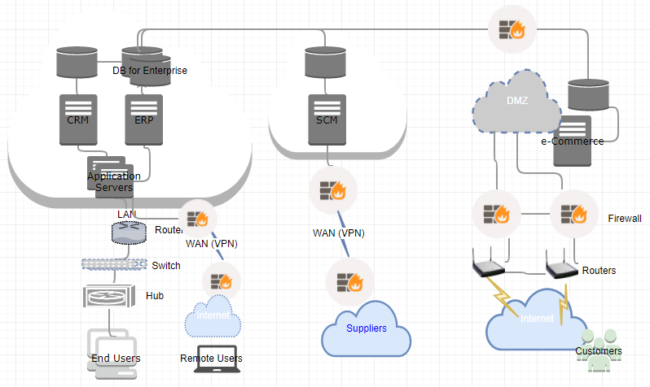
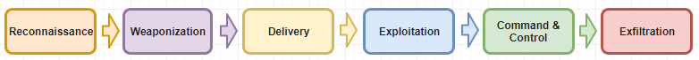
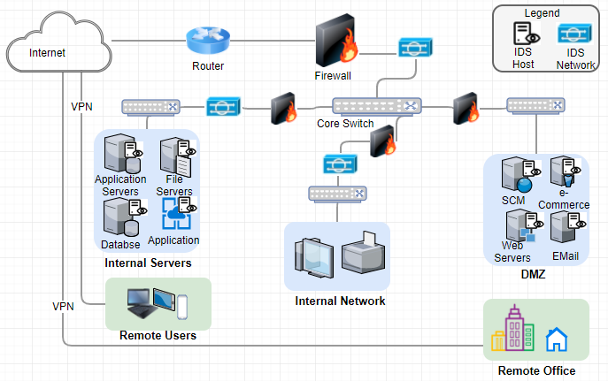
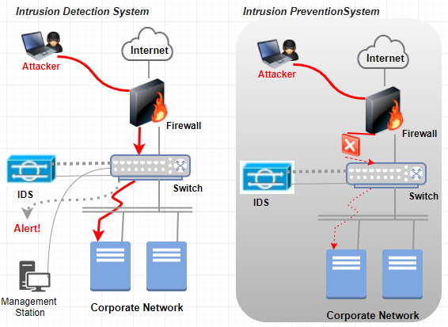
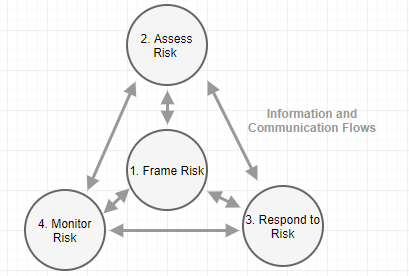

Digital Forensics Plan for Samyang
Samyang, a sugar manufacturer in Korea, has more than 90 years of business with over 10,000 employees worldwide. There are multiple sugar cane plantations as suppliers in Indonesia and Brazil who supply Samyang with sugar cane through barge as bulk. The ingredient gets refined in two manufacturing factories in Korea. There are several sales and marketing offices in Seoul, Busan, Tokyo, Shanghai, London, and New York. Lately, there are additional facilities to manufacture finished goods where intermediate goods used to be major products so far.
The business environment has been changing when sugar is not the controlling price item anymore, and monopoly is not in government’s favor in recent years. As a result, lots of new players come to the market with the advanced information technology tools though they are lacking of experience and exiting customers’ base.
To cope with the internal and external challenges in sugar market, Samyang has implemented multiple enterprise solutions. The enterprise solutions comprise Oracle’s Fusion product for Supply Chain Management (SCM); Oracle’s JD Edwards EnterpriseOne as Enterprise Resource Planning (ERP); Oracle’s Siebel Business Application for Customer Relationship Management (CRM); and Oracle’s e-Commerce solutions for the online sales. Lately, Samyang is considering to migrate all these on-premises to the Oracle cloud to minimize the cost of ownership and soften impending security concerns.
Each solutions have their designated servers for different purpose of transactions where users can access each systems using single sign on (SSO). Access control is performed using Lightweight Directory Access Protocol (LDAP) and each servers stores customers information, marketing materials, and other proprietary data. Servers for SCM and CRM are sitting in the demilitarized zone (DMZ) servers with multiple firewalls. Both Local Area Network (LAN) and Virtual LAN (VLAN) are the communcation link to the enterprise solutions except e-Commerce sitting in a proxy server which is open to the public through the Internet. For storage network, which sits between logic server and database server, Software-Defined Network (SDN) is in use. SDN mediates the access between application layers and infrastructure layers of computer systems. Each machines are encrypted using endpoint encryption tools.
The imporance of digital forensics is even paramount in highly connected in modern computing environments because almost all organizations are very much dependent on the modern information technology. The purpose of digital forensics plan is to generate digital evidence in a civil or criminal investigation through the collection, examinization, and analysis of digital data. The proactive aspect of this digital forensic plan is to trobleshoot, monitor, recover, and protect sensitive data in the organization.
This plan follows a scientific process actively through the observation of threats and vulnerabilities in computer systems and its network, and eventually it plans to mitigate the risk. Firstly, data collection entails the chain of custody, duplicate and validate evidence. Secondly, examine and analyze the collected data through analytical tool and reproduce digital forensics analysis procedure. Lastly, this plan generates reports with conclusion and if needed to testmony of findings.
When vunerability is a weakness or flaw in a certain system, risk is the probability of a threat agent exploiting a vulnerability and the associated impact. The threats penetrate the operating system, network, and the Internet. Attackers or hackers can bypass physical security, gain access through social engineering, warring, and other types of hacking using logic bomb, trojan horses, virus, and warms.
The digital crime can leave traces in multile layers of an organization information technology infrastructure including opeating systems data including cache, network and network traffice data, application data and its database, and possibly multiple-source data.
It is crucial to build incident response team to mitigate the security risks from multiple sources in an organization with skill and knowledge on the networking topology and configuration, intrusion detection system and intrusion prevention system, securing evidenece, documenation. Same personnel should be literate to conduct preliminary investigation, to have basic fluency of forensic tools in computers and networks, to monitor network and its traffic, to preserver evidence, and to write reports on findings.
It is imperative to build robust evidence through accurate handling, containment, and examination of evidence in the crime scene or the lab on seisured digital media. It is vital to execute proper prepration and containment not to damage any evidence for crimes which encompass evaluating and securing the scene, documenating the scene, collecting evidence which has evidentiary value, and packaging, transporataion, and storage.
Crime scene investigators and lab technicians need to document both actions taken and their findings in the report to minize the risk because adequate handling, containment, and examinization of the evidence are essential to prevent possible incident to occur for the organization. This reports includes all custodians of the evidence using a Chain of Custody form. And same report should indicate the scope of invistation let alone the methodology and approaches used for investigation.
Table of Contents
3.1 Threats and Vulnerabilities. 8
3.1.1 Remote. 9
3.1.2 Local 10
3.1.3 Client 11
3.1.4 Denial of Service. 11
3.1.5 Summary. 12
3.2 Computer System Incidents. 13
3.2.1 Types of Breaches. 13
3.2.2 Analysis Process and the role of Incident response team.. 15
3.2.3 Technique to Incident Identification. 16
3.2.4 Identification of Threats and Incidents. 17
3.2.5 Summary. 18
3.3 Network and Internet Incidents. 19
3.3.1 Importance of Log Analysis in IDS/IPS. 19
3.3.2 Prevention and Mitigation Plan. 22
5 Appendix A: Risk Mitigation Technique and Plans. 29
5.1 Process for Risk Mitigation Strategy. 29
5.2 Risk Mitigation Plan Activities. 30
5.3 Risk Mitigation Plan Implementation. 31
5.4 Technique to Mitigate Common Breaches. 31
According to NIST, the threat is the potential for a threat-source to exercise a specific vulnerability, and threat-source is either (a) intent and method targeted at the intentional exploitation of a vulnerability, or (b) a situation and method that may accidentally trigger a vulnerability (NIST, 2012). On the other hand, vulnerability is a flaw or weakness in any aspect of the system (Elky, 2006).
In moving forward, it is important to review the existing network topology of Samyang to determine the threat and vulnerability because the probable attack is through the network. As depicted in Figure 1, there are groups of users: internal and external where external user are categorized the named users like suppliers and anonymous customers for e-Commerce.

Figure 1. Network Topology for Samyang
Based on current network configuration, possible threat agents are remote users, local users, clients. And the attack can cause potential Denial of Service (DoS). Here we review threats and vulnerabilities in detail.
Remote access is the capability of users to access its secured resources from locations outside company’s network (Scarfone, n.d.). Since Samyang is a global business entity, it is inevitable to allow a certain users to access the network remotely to perform daily transaction using ERP and CRM applications. As depicted in Figure 1, all internal and external users have means to access Samyang’s network through one or other ways using the Internet.
As result, this business activity leaves vulnerabilities below (Scarfone, n.d.),
Hence, the possible threat from remove access can be (Scarfone, n.d.),
Some literature describes the modification of data, eavesdropping, and spoofing when the network is not secured.
Each enterprise solutions (CRM, ERP, SCM, and e-Commerce) which Samyang are running have its application level security to have proper access control. Currently, single-sign-on (SSO) and Lightweight Directory Access Protocol (LDAP) are in place. However, it is high time to review whether all sensitive data are secured properly though vulnerability and threat for the internal users within company’s network.
Some of internal vulnerabilities are (Manky, 2010),
So the internal threats are (Whittle, 2008).
It is important for Samyang to provide sufficient information to the customers including online invoice, tracking, cataloging, and supply demand data in the area of CRM, SCM and e-Commerce areas to gain better customers’ satisfaction. Since suppliers and customers access these applications using the Internet, which repeats the vulnerability of internet where the solutions have its database. It is commonplace to access these systems using mobile devices including smartphones, tablets, and so on, which in turn, possesses vulnerabilities and threats.
Probable vulnerabilities are (Mookhey, 2004),
On the other hand, the threats are,
Denial of Service (DoS) is overloading the resources for target till it crashes, which disturbs the availability in information security principle. The resources can be network bandwidth, server memory, application exception handling, CPU usage, hard disk space, database space, and database connection pool. As depicted above, almost all companies fall prey to this types of attack and Samyang is not an exception.
The vulnerabilities pertain to DoS can be any software,
And threats are (AppliCure, n.d.),
According to Hayes, the very advanced attack comprises six stages as depicted in Figure 2 (Hayes, 2015),

Figure 2. The Intrusion Kill Chain
Above figure gives idea on the threat factors well even when the attack is not sophisticated.
A computer system comprises processor, main memory, I/O module, and system bus. And the definition of computer includes file systems, virtual machines, embedded system, its network, and distributed system. A security breach is the unauthorized access of information to acquire, access, use, or disclose it in computer systems. On the other hand, a threat is a potential for threat-source to exploit or excise to attack a vulnerability, which results in a security breach or a violation of the system’s security policy (Elky, 2006). Here we review some of known threats and breaches against computer systems and some of technique to determine the root cause of each breaches.
An event is any observable occurrence in a system or network which can gives sign that an incident is occurring (Kissel, 2011). Figure 3 below depicts the model which causes a certain organization at risk (NIST, 2012).
Figure 3. Risk Model with Threat Event
Here reviewing five well-known types of security breaches which are malware, phishing, password attacks, ransomware, and denial-of-service (ERM, n.d.).
Malware is general term to describe virus. Possible events are 1) delivering known/modified malware to internal organizational information systems; 2) delivering targeted malware for control of internal systems and exfiltration of data; 3) using removable media; 4) planting malware into downloadable software; 5) inserting targeted malware into organizational information systems and its components; 6) injecting specialized malware on system configuration; 7) inserting tempered hardware component into the supply chain; 8) inserting general purpose sniffers; 9) inserting malicious scanning devices; and 10) forge subverted person into organization (NIST, 2012).
Phishing is to access personal information by masking intention. Nowadays some personal information gets gathered using phishing page. Possible events comprise a malicious email to bypass legacy spam filters, firewalls, and gateway security scan. Email with link to lead to another web page which is deceptive. Scammer sends email using the known identification to the one within my contact list. Domain Name System (DNS) cache poisoning to redirect users access. And luring user to sign in fake Dropbox or Google Drive (Bisson, 2015).
Brute Force Attack, Dictionary Attack, and Key Logger Attack are common method to find out the password of yours. Possibly performing perimeter network scanning, network sniffing, gathering information using open source discovery in organization, or performing malware-directed internal reconnaissance (NIST, 2012).
Ransomware usually is targeting the organizations that need access to sensitive data promptly by asking ransom. Possible events are crafted attacks specifically based on deployed information technology information, and the events similar to malware attacks.
The adverse event of denial-of-service (DoS) is that a website is inundated with requests or data until the system crashes. Common way is using a host of personal computer. Possible events are conducting communication interception, wireless jamming, attacking using unauthorized ports, protocols, and services.
As reviewed above, security breaches are commonplace. The table 1 describes how we identify the attack and set the countermeasure for the attack to prevent and minimize the adverse impact to the organization.
Table 1. The Identification of Breaches and Role of Incident Response Team
| Security Breaches | Analysis Process for Identification | Role of Incident Response Team |
|---|---|---|
| Malware |
|
|
| Phishing |
|
|
| Password Attacks |
|
|
| Ransomware |
|
|
| Denial-of-Service |
|
|
Incident response comprises preparation, identification, containment, eradication, recovery, and lesson learned. So the role of incident response team repeats each steps for an individual security breaches (Distler, 2007).
There are various means and techniques to identify the security breaches which can cause millions dollars of loss for the organization attacked.
Table 2. Techniques for Threats Identification
| Security Breaches | Techniques |
|---|---|
| Malware |
|
| Phishing |
|
| Password Attacks |
|
| Ransomware |
|
| Denial-of-Service |
|
Whatever the types of incident, it is important to go through to review information below to collect the evidence (Brezinski & Killalea, 2002),
Based on breaches in security incident, breaches take place in multiple threat sources.
The internal users outside company’s network are more vulnerable than local client regardless Firewalls and Virtual Private Network (VPN) even when IDP/IPS are in place. Hence, any breaches associated with network incident are related with users with remote access.
The local users are highly dependent on the network infrastructure which company has implemented. However, the attacker can target any of user or machine as entry point of attack when getting information on configuration and network. Anti-virus software, IDS/IPS help security specialist to identify the breach threats effectively.
Numerous phishing and ransomware attackers exploit the system through the portal to access the company’s network. Tighten rules for access control identifies the threat.
Common way to determine Denial-of-Service (DoS) or distributed DoS (DDoS) are by examining the unusual slow network performance, unavailability of a certain website, disconnection of network and so on.
This section focuses on the attacks which is specific to data breaches. Since the security principle is Confidentiality, Integrity, and Availability (CIA), the risks of Malware, Phishing, Password Attacks, Ransomware, and Denial-of-Service can damage the business and reputation greatly for Samyang. To protect data properly, Samyang need review below (MIT, n.d.),
The business nature of Samyang requires highly distributed network because of broad suppliers in oversea and newly implemented e-Commerce to the public. Figure 4 represents when Intrusion Detection System (IDS) is in place to access corporate network.

Figure 4.IDS/IPS for Samyang
Here we review the importance of Log Analysis in above configuration and its prevention and mitigation plan in detail including Log based Intrusion Detection System (LIDS).
It is meaningful to review the difference between Intrusion Detection System (IDS) and Intrusion Prevention System (IPS) as depicted in Figure 5. Nonetheless, it is important for Samyang to review the cost factor in these systems.

Figure 5. IDS vs. IPS
Table 3 describes the basic function of IDS and IPS (Scarfone & Mell, 2007).
Table 3. Function of IDS and IPS
| IDS | IPS |
|---|---|
| Recording information related with observed event | Stopping the attack itself |
| Notifying security administrator of important observed event | Changing the security environment |
| Producing reports | Change the contents of attacks |
Intrusion detection is the technique of monitoring a certain events occurred in a computer system or network through possible signs for incident including violation of security policies. Hence, Intrusion Detection System (IDS) is software to automate the detection of attack (Gupta, 2012). There are two IDS models in use for many companies, where are Host-based and Network-based, and many anti-virus applications work such manner because both models have its weak points. Another model to discuss is Log-based Intrusion Detection System (LIDS) to detect attacks, security policy violation, and the misuse of computer systems using the logs generated by IDPS. The primary goals of IDPS using Security Information and Event Management (SIEM) as follows (Scarfone & Mell, 2007),
Both Big Data and Artificial Intelligence (AI) are pervasive in each industry to have better decision making in recent years. To some extent, the LIDS follows same approach as these with primary decision source (Log) and its analysis (Intelligence). The usage or usefulness of logs are evolved from a simple troubleshooting to optimize system/network performance, to record the actions of users, and to supply data for investigating malicious activity (Kent & Souppaya, 2006). The sources of computer security logs comprise the logs from security software (antivirus software, firewall, and IDS/IPS), operating systems for both client, server, networking equipment, and various applications. As the volume of logs grow exponentially it is essential to have computer security log management to generate, transmit, store, analyze, and dispose it (Kent & Souppaya, 2006).
There are common detection methodologies which enable incident response team to identify the threats and vulnerabilities in the system and networks as below (Scarfone & Mell, 2007),
The focal points of security transits from the infrastructure landscape to user security focus with the environments: complex computer systems, hidden network infrastructure, malicious software, viruses, warms, and risk of identity/asset theft (Antonelli, 2006). Hence, the objectives are
In this section, possible steps to prevent intrusion and techniques to mitigate current vulnerabilities where the vulnerabilities lie in people and policy, process, and technology.
Previously, the benefits of IDPS entail as below (Gupta, 2012),
Here we review detail on the objective constructed during IPDS review.
Preventing attacks through network and the Internet needs careful analysis and planning to stop an attacker from unauthorized modification, destruction, or disclosure. When it comes to network, firewalls, network scanning, and security risk assessment are most important steps where password security, social engineering, and secure remote login are important ones in securing user.
Security risk assessments addresses the potential adverse impact to the organizational operations, individuals, assets addressing people and policy, process, and technology. Same encompasses the use of information systems, and the information processed, stored, and transmitted (NIST, 2012).
Commonly, the security risk assessment follows as below (Elky, 2006),
As system development lifecycle, the framework of security risk assessment for preventive purpose are (NIST, 2012),
In other words, the prevention steps encompasses security policy, security awareness, and access control using identification, authentication, and authorization.
Mitigation includes remedying the flaw or supply some compensatory control to reduce or minimize impact associated with vulnerabilities. At once relating threats with vulnerabilities, it follows the step below (Palmaers, 2013),
Well-known threats comprise unauthorized access, inappropriate access of resources, disclosure of data, unauthorized modification, disclosure of network traffic, spoofing of network traffic, disruption of network function. Where threats are errors and omission, fraud and theft, disgruntled employees, physical and infrastructure, malicious hackers, and malicious application (Ahmad & Habib, 2010). Common attacks in the network comprise 1) Denial of Service (DoS, to user up resource), 2) Distributed DoS (DDoS, to flood the resource or bandwidth), 3) man in the middle, 4) social engineering, 5) virus, 6) warms, 7) buffer overflow, 8) packet sniffing, 9) FTP bounce, and 10)smurf which exploits the common network toll like ping.
It is important to review current security technologies to mitigate the vulnerabilities as below,
The purpose of digital forensics plan for Samyang is to explore threats and vulnerability in computer systems and network to guide and implement proper mitigation plan, and to provide countermeasure against security risk. Since digital forensic plan follows typical scientific method, focus was made in internal system configurations and external threats including various threat sources.
Based on threat sources, remote, local, and client, various vulnerabilities are discovered in the area of people and policy, process, and technology area. Detail vulnerabilities are inadequate policies and procedures, security through obscurity, misconfigured operating systems and embedded devices, in appropriate wireless communication, lacking of intrusion detection, and lack of change management.
There are various types of breaches affecting computer systems. Well-known breaches are malware, phishing, password attack, ransomware, and denial-of-service. After analyze the source of attack, proper incident response action need taking where the incident response life cycle which comprises 1) preparation; 2) detection and analysis; 3) containment, eradication and recovery; and 4) Post-incident activities.
The log analysis mechanism through instruction detection/prevention system (IDPS) are most important to prevent known attacks and potential attacks. The primary purpose of IDPS is to identify incidents, security policy problem, document exiting threats, and deter individual when violating security policies. Network-based, wireless, network behavior analysis, and host-based IDPS have its own merit and capabilities with prevention capabilities.
The purpose of the incident management process are (proactively) to mitigate the adverse effect of incidents against normal business operations with precursor sign and (reactively) to restore services and operations to the production environment as quick as possible using indicator sign. Digital forensics gets more important in both law enforcement and corporate security department because crimes are associated with some digital means. Not to mention, it is important to have fluent forensic tool set where the logs, data, and information grows exponentially. These tools function like big data artificial intelligence, which analyze given information and maintain solid proof of any criminal activities.
Since risk assessment is most important process in risk management plan, it is noteworthy as depicted in Figure 6 (NIST, 2012),

Figure 6. Risk Management Process
Above figure emphasizes on the important of communication within organization when risk is understood.
So far, the steps for risk assessment methodology follows 1) Identifying threats; 2) Identifying Vulnerabilities; 3) Relating Threats to Vulnerabilities; 4) Defining Likelihood; 5) Defining Impact; and 6) Assessing Risk (Elky, 2006). And various mitigation strategies were provided based on threat-vulnerability relationship. The primary purpose of risk identification (step 1, 2) and analysis (step 3 through 6) is to prepare for risk mitigation. Possible process for risk mitigation strategy are (NAP, 2005),
Risk mitigation planning comes into picture after risk is analyzed as depicted in Figure 7.
Figure 7. Risk Mitigation Process
The risk mitigation plan (RMP) is based on realistic, achievable, measurable means containing followings (AcqNotes, n.d.),
Table 4 represents a plan of Action & Milestones (POAM) (Elky, 2006),
Table 4. Sample of Plan of Action & Milestones
| Risk | Strategy | POC | Resource ($) | Milestones | Target Completion | Actual Completion |
|---|---|---|---|---|---|---|
Based on a Risk Mitigation Plan (RMP), a risk mitigation plan implementation is to be sure successful risk mitigation. The contents and procedure encompasses (AcqNote, n.d.),
As reviewed earlier, the most prevailing threats are malware, phishing, password attacks, ransomware, and denial-of-service in modern computing environment. And vulnerabilities lie in people and policy (organization level), process (mission/business process level), and technology (information system level). Common threat events are 1) performing reconnaissance including gathering information; 2) crafting attack tools; 3) delivering /embedding/installing malicious capabilities; and 4) exploiting and compromising before actual attack takes place. Here review the technique to mitigate the common breaches at high level (McGinley, 2017),
On the other hand, to keep up with security principles,
Detail technique depicted in Figure 8 (CMU, n.d.),

Figure 8. Risk Mitigation Techniques
As the last process of incident management lifecycle, post-incident activities include (Cichonski et al., 2012),
Commonly Post Incident Review encompassed items above as an effective way to improve incident response planning and procedure based on “lesson learned.” Through this report, organization can identify and correct weaknesses, and determine strengths. Table 6 represents a template for Post Incident Report which is the outcome of Post Incident Review (UWSUPER, 2014).
Table 6. Post Incident Report Template
|
Post Incident Report Incident Summary Incident Details Resolution/Restoration of Services Technical Lessons Learned/Action Items The positives Improvements Communication Lessons Learned/Action Items Initial Issue communication Strength Weakness Notification to the security stakeholders Strength Weakness |
The post incident report should include (ServiceNow online, 2017),
The primary purpose of “lesson learned” meeting is to go through possible opportunities which can prevent and mitigate similar incident in the future by answering questions below (Cichonski et al., 2012),